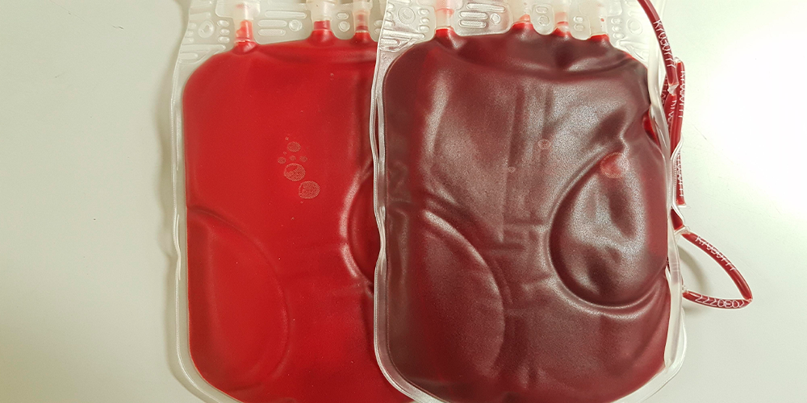
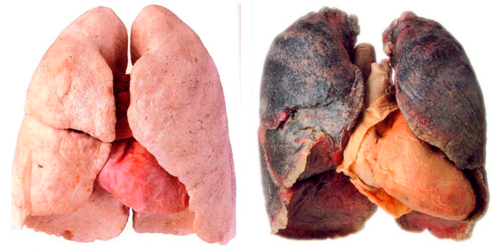

Når du ryger, løber kulilten rundt i hele kredsløbet og forkalker blodårerne. Det hæmmer blodstrømmen til hjertet, og øger risikoen for skader i blodårerne. Kulilte gør det også sværere for blodet at optage den nødvendige ilt, fordi kulilten tager pladsen i blodet fra ilten.
Parodontose er en af de mange ulemper ved rygning Betændelsen fører til, at knoglen langsomt 'ædes op' og man taber sine tænder

Hvis du ryger, kommer der flere tusinde stoffer ned i dine lunger.
Et af stofferne er bl.a. tjære, der ødelægger lungernes små tynde luftblærer